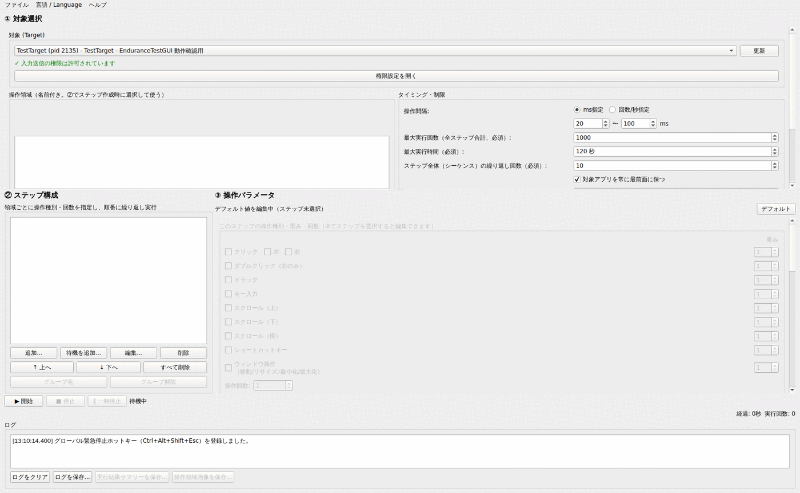
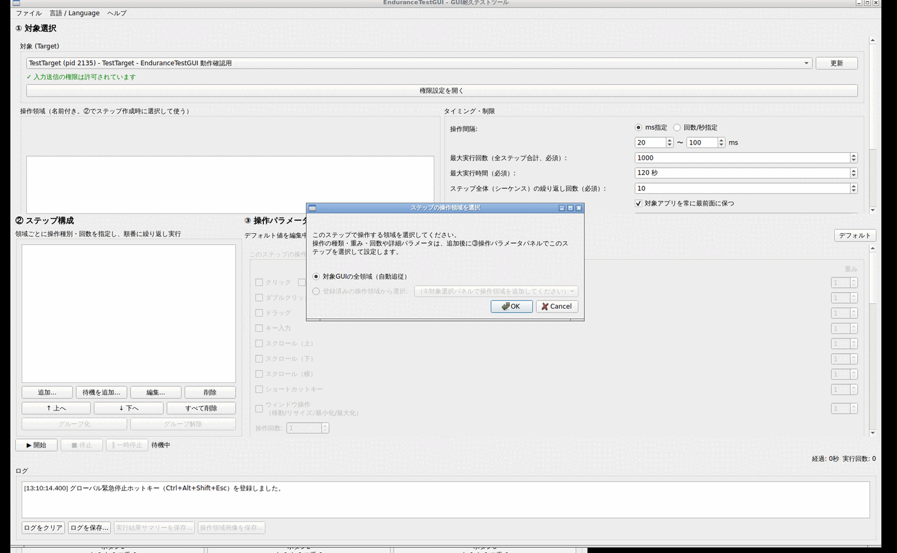
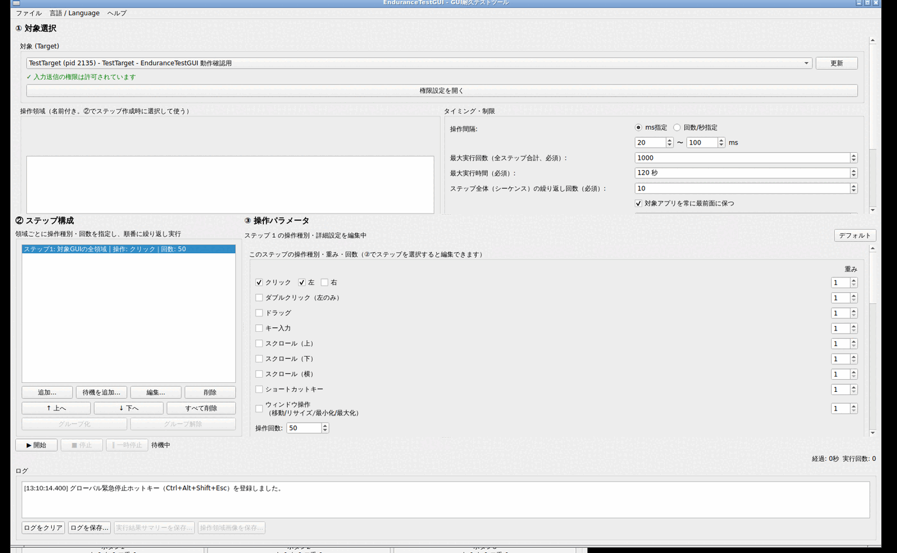
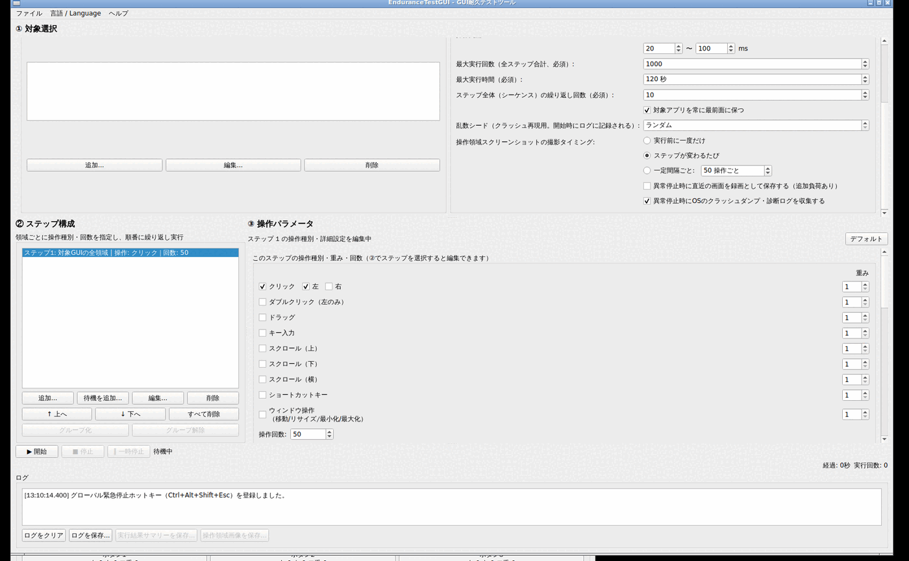
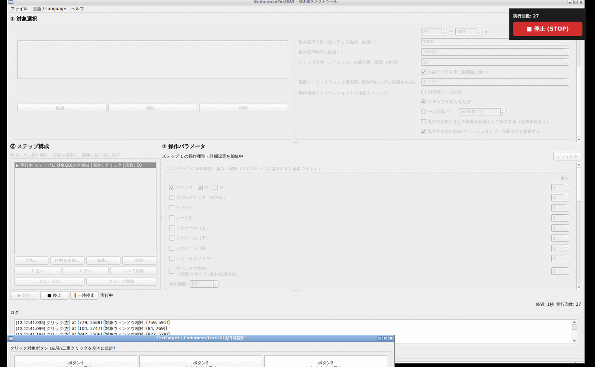
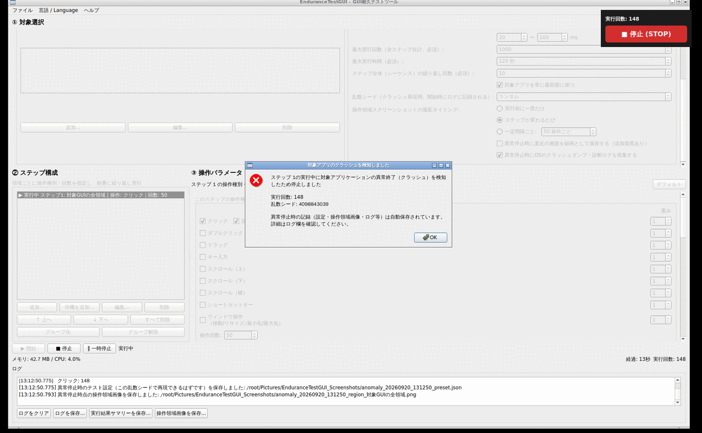
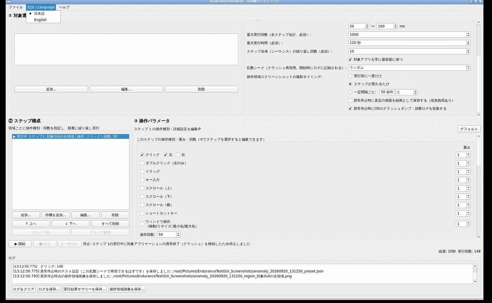

GUIアプリケーションにランダムなクリック・操作を送り続けて、長時間稼働させたときに不具合（クラッシュ・フリーズ・メモリリーク等）が出ないかを確認するための耐久テストツールです。
EnduranceTestGUIは、テスト対象のGUIアプリケーションに対して、あらかじめ決めた「操作領域」の中でクリック・ドラッグ・キー入力・スクロール・ショートカット・ウィンドウ操作などをランダムに送り続ける耐久テストツールです。人手では時間がかかる「何百回、何千回とボタンを押し続けたらどこかで壊れないか」という確認を自動化できます。
特に力を入れているのは、不具合が起きたときに「何が原因だったか」を後から追いかけられることです。対象アプリがクラッシュした場合は、
を自動的に保存します。詳しくは クラッシュ検知と再テスト を参照してください。
システム設定の「プライバシーとセキュリティ」→「アクセシビリティ」で EnduranceTestGUI を許可してください。未許可のまま開始しようとすると、許可を促すダイアログが表示されます。
EnduranceTestGUI.app をFinderから直接ダブルクリックして起動するのが確実です。
入力送信そのものに特別な権限は不要です（Xサーバーにアクセスできれば動作します）。右クリックメニューの項目選択機能を使う場合のみ、対象アプリ側がAT-SPIアクセシビリティに対応している必要があります。Waylandには対応していません（X11、またはXWayland経由のみ）。
ウィンドウは縦に3段構成になっています。

「対象 (Target)」のプルダウンから、テストしたいアプリのウィンドウを選びます。一覧に出てこない場合は「更新」ボタンで再取得してください。選択すると、そのアプリを操作するための権限があるかどうかが緑（許可済み）または赤（未許可）で表示されます。未許可の場合は「権限設定を開く」からOSの設定画面を開けます。
対象アプリによっては、起動直後にログインや初期設定など決まった操作を済ませてからでないと、ランダム操作による耐久テストを始められない場合があります。①パネルの「起動時セットアップ」欄に一連の操作を登録しておくと、対象アプリが起動しているのを確認した直後・②のランダム操作が始まる前に、登録した順番で一度だけ自動実行されます。
1「追加...」を押すと、1件分の操作を設定するダイアログが開きます。「種類」からクリック・ダブルクリック・右クリック・ドラッグ・文字入力・キー入力・待機のいずれかを選びます。
2クリック系・ドラッグの操作は「位置を選択...」ボタンを押すと画面全体が半透明になるので、対象アプリ上でクリックしたい位置をそのままクリックしてください（座標を手入力する必要はありません）。座標は対象ウィンドウの左上を基準にした相対位置として保存されるため、次回以降ウィンドウの位置が変わっていても正しい位置を操作できます。位置を選択すると、このダイアログが開いている間だけ、選んだ位置に小さなマーカー（ドラッグの場合は開始位置と終了位置の両方を線で結んで）が画面上に表示され続けるので、意図した場所を選べたか一目で確認できます。
3「説明（任意）」欄に「ユーザー名欄」のようなメモを付けておくと、①の一覧で内容を見分けやすくなります。
4「OK」で一覧に追加されます。「↑ 上へ」「↓ 下へ」で実行順を入れ替えたり、「編集...」で内容を変更したり、「削除」で取り除いたりできます。
「連続自動実行（①バッチ）では初回のみ実行する」にチェックを入れると、①下部の「連続実行回数」を2以上にして連続自動実行した際、2回目以降の自動再起動では起動時セットアップをスキップします。初回だけ表示されるライセンス同意ダイアログのように、毎回は不要な操作がある場合に使います。
テストは1つ以上の「ステップ」を順番に繰り返し実行する形で構成します。
1「追加...」ボタンを押すと、そのステップで操作する範囲を選ぶ小さなダイアログが開きます。「対象GUIの全領域（自動追従）」か、①で登録した名前付き操作領域のどちらかを選んで「OK」を押します。

2ステップが一覧に追加され、自動的に選択された状態になります。この時点で操作の種類はまだ決まっていないので、次の「③ 操作パラメータ」で設定します。
ステップは一覧内で「↑ 上へ」「↓ 下へ」で順番を入れ替えたり、複数選択して「グループ化」でまとめて1つのグループとして扱うこともできます（グループ内ではメンバーが重みに応じてランダムに選ばれます）。「待機を追加...」で、指定ミリ秒だけ何もしない「待機ステップ」を挟むこともできます。
②でステップを選択すると、③のパネルにそのステップの設定が表示されます。有効にする操作の種類（クリック・ダブルクリック・ドラッグ・キー入力・スクロール・ショートカットキー・ウィンドウ操作）にチェックを入れ、そのステップで実行する回数（操作回数）と、各操作の発生しやすさ（重み。大きいほど選ばれやすい）を指定します。

クリックやドラッグ距離、キー入力で使う文字種、スクロール量など、操作ごとの詳しい設定も同じパネルの下部で行えます。①の「デフォルト」ボタンから、新しく作るステップ共通の初期値を編集することもできます。
①パネルの「タイミング・制限」欄では、操作の間隔（ms、または回数/秒）、最大実行回数・最大実行時間・シーケンスの繰り返し回数（いずれも必須。無制限は選べません）、乱数シードなどを設定します。下にスクロールすると、以下の項目も設定できます。

| 項目 | 説明 |
|---|---|
| 乱数シード | 「ランダム」のままなら毎回自動生成。値を指定すると同じ操作列を再現できる（クラッシュ再現用） |
| 操作領域スクリーンショットの撮影タイミング | 実行前に一度だけ / ステップが変わるたび / 一定間隔ごと、から選択。撮影された画像は後から「操作領域画像を保存...」で保存可能 |
| 異常停止時に直近の画面を録画として保存する | デフォルトOFF。有効にすると0.5秒間隔で直近約10秒分の画面をリングバッファに保持し、クラッシュ時に連番PNGとして自動保存 |
| 異常停止時にOSのクラッシュダンプ・診断ログを収集する | デフォルトON。対象アプリのクラッシュレポート/コアダンプをベストエフォートで探し、見つかればパスをログに記録 |
設定が済んだら「▶ 開始」ボタンでテストを開始します。実行中は画面右上に常時最前面のフローティングパネル（実行回数と「■ 停止 (STOP)」ボタン）が表示されるので、対象アプリにフォーカスが移っていてもすぐに止められます。「‖ 一時停止」で一時停止・再開も可能です。

ログには操作ごとに、座標・対象ウィンドウ相対座標・（取得できれば）クリックしたUI部品名が記録されます。実行中のログは全行が ~/Documents/EnduranceTestGUI_Logs/ 以下のファイルへも逐次保存されるため、画面表示（直近5000行まで）から流れて消えても後から全履歴を確認できます。
次の場合、テストは自動的に停止します。
対象アプリのプロセスが消えたことを検知すると、テストは即座に停止し、次のようなダイアログが表示されます。

ダイアログとログには、どのステップの実行中に検知したか・それまでの実行回数・乱数シードが表示されます。同時に、その乱数シード付きのテスト設定（JSON）・操作領域のスクリーンショット・（有効なら）直近の画面録画・（見つかれば）OSのクラッシュダンプの場所が、自動的に ~/Pictures/EnduranceTestGUI_Screenshots/ 以下へ保存されます。
「ファイル」メニューの「テスト設定を保存...」で、①②③で組んだ操作領域・ステップ構成・タイミング設定をまとめてJSONファイルに保存できます。「テスト設定を読み込む...」で読み込むと、保存時に対象にしていたアプリが現在も起動していれば自動的に選択されます（起動していない場合は手動での選び直しを促すメッセージが表示されます）。同じ構成を毎回作り直さずに、別の機会やビルドに対して使い回せます。
メニューバーの「言語 / Language」から「日本語」「English」を選べます。選択内容は保存され、次回起動時から反映されます（実行中の画面がその場で切り替わるわけではありません）。

対象ウィンドウが他のウィンドウに覆われていないか、最小化されていないか確認してください。それでも解決しない場合、環境（特にLinuxの一部のタイル型ウィンドウマネージャ）によっては、対象アプリを安全に操作できるかどうかを確認する仕組み自体が動作しないことがあります。
①の「更新」ボタンを押して一覧を再取得してください。通常のトップレベルウィンドウのみが一覧に表示されます。
この機能は実験的なもので、macOS/Linuxのアクセシビリティ機能に依存しています。Linuxでは対象アプリのツールキットがAT-SPIブリッジを有効にしている必要があります（GTK/Qtアプリは通常デフォルトで有効）。
EnduranceTestGUI自体のソースコードは MIT License で公開されています（リポジトリ直下の LICENSE）。本アプリはQt（Widgetsモジュール）を使用しており、Qtのフリーソフトウェア版はGNU LGPL バージョン3（一部モジュールはGPL）の下で配布されています。使用しているQtが実際にどのライセンスで配布されているかは、アプリ内の「ヘルプ」→「Qtについて...」からいつでも確認できます。動的リンクしているその他のライブラリも含めた詳細は、リポジトリ直下の THIRD_PARTY_NOTICES.md を参照してください。